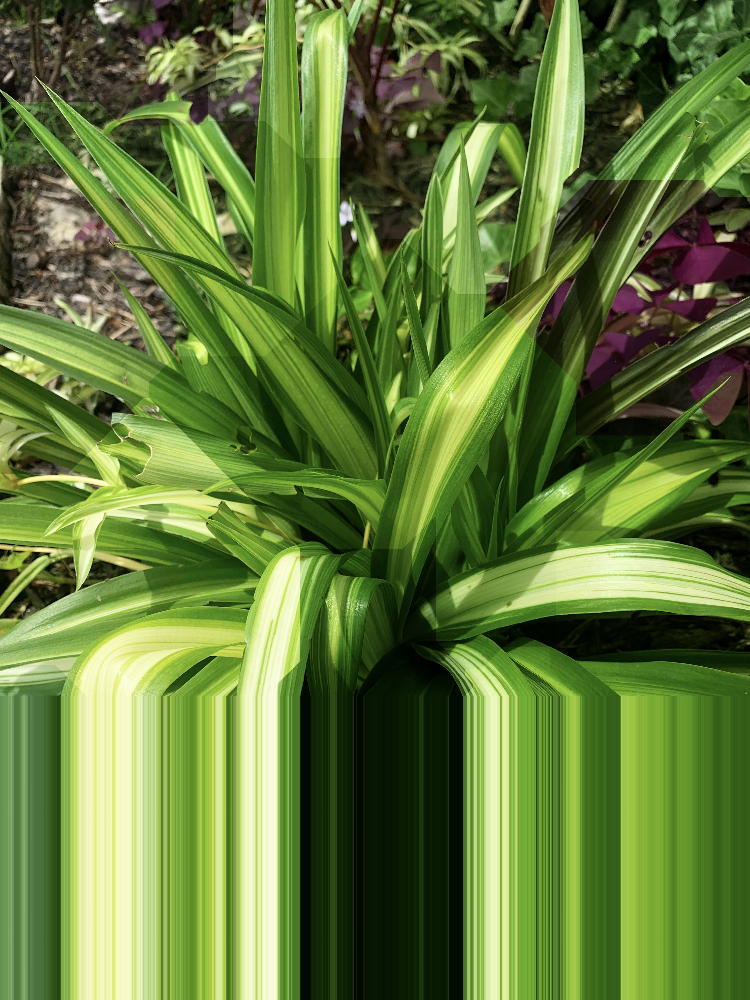

There are several ways to repurpose household waste to make a planter look aesthetically pleasing, even when it's not in full bloom. Here are a few ideas:
1. Paint: Leftover paint from other projects can be used to turn a drab cardboard or plastic bottle into a bright, colorful planter. Just make sure the paint is non-toxic and safe for plants.
2. Fabric and Twine: Old clothes, curtains, or other fabric can be cut into strips and wrapped around the planter for a chic, textured look. Twine or yarn can also add a rustic touch.
3. Glass Pebbles or Mosaic Tiles: If you've got any broken glass items, they can be turned into mosaic tiles to decorate the exterior of your planter. Always be careful handling broken glass and make sure to seal the pieces properly to prevent injury.
4. Old CDs or DVDs: These can be cut into small pieces and adhered to the outside of the planter to create a unique, reflective surface that catches the light.
5. Decorative Stones or Shells: If you have a collection of small stones, shells, or other trinkets, these can be glued onto the planter for an ornamental look.
6. Decoupage: Use old magazines, comic books, or newspaper clippings for a decoupage project. Cut out images or text that you like, adhere them to the planter with glue, and then seal with a clear coat.
7. Coffee Sacks or Burlap: If you have access to old coffee sacks or burlap, these can be wrapped around larger planters for a trendy, industrial look.
Remember, the goal is not to disguise the fact that you're using repurposed materials, but to celebrate it. With some creativity, even items typically considered "waste" can become beautiful and functional once again.
|  |